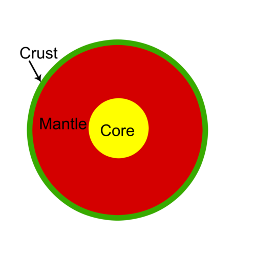

Earths Crust
We live our whole lives on the Crust of the Earth we know and love.
The Earth is made up of so much more than just the crust itself.
Here is an Artical, giving a brief description on the 4 layers of our earth.
The crust of the earth is only 1% of the mass of the earth.
